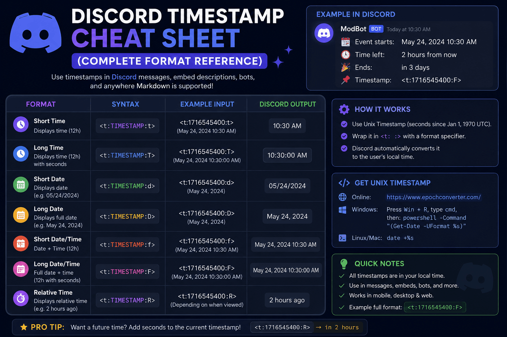

Discord Timestamp Cheat Sheet (All Formats)

Bookmark this page. That is the whole idea behind a cheat sheet. When you are mid-message and you just need the right Discord timestamp code, you should not have to dig through a long tutorial. You want the format, the syntax, and an example you can copy in two seconds flat.
So that is exactly what this is. Every Discord timestamp style laid out in one place, with the code, what it shows, and when to reach for it. There is a quick reference table up top for when you are in a hurry, then a short section on each style for when you want a little more context. No fluff, no scrolling past a life story to get to the goods.
If you would rather skip typing entirely, the Discord Timestamp Generator builds all seven formats from a simple date picker and reads your timezone for you. Keep it open in a tab and pair it with this sheet, and you will never post a wrong time again.
The cheat sheet in five lines
- Every code follows
<t:UNIX:STYLE>. Only the last letter changes. - The seven styles are
t,T,d,D,f,F, andR. - Leave off the letter and Discord defaults to
f. - Letters are case sensitive:
fandFare not the same. - Everyone sees the time in their own timezone, automatically.
Every Discord Timestamp Style
Here is the full Discord time format reference in one table. Every row uses the same Unix
number, 1700000000, so you can see how just the style letter changes what people read.
| Style | Name | Code | What you see |
|---|---|---|---|
t | Short Time | <t:1700000000:t> | 10:13 PM |
T | Long Time | <t:1700000000:T> | 10:13:20 PM |
d | Short Date | <t:1700000000:d> | 11/14/2023 |
D | Long Date | <t:1700000000:D> | November 14, 2023 |
f | Short Date/Time | <t:1700000000:f> | November 14, 2023 10:13 PM |
F | Long Date/Time | <t:1700000000:F> | Tuesday, November 14, 2023 10:13 PM |
R | Relative Time | <t:1700000000:R> | 2 years ago |
That table is the heart of the cheat sheet. The sections below add a one-line "when to use it" for each style, plus the mistake that most often trips people up. Want the deeper version with full explanations? Our Discord timestamp formats guide covers every style in detail.
Short Time (:t)
<t:1700000000:t>Shows: a bare clock time like 10:13 PM.
Use it when: everyone already knows the day and you just need the hour, like a same-day "starts at" ping.
Watch out: do not use it for events days away, since there is no date to anchor them.
Long Time (:T)
<t:1700000000:T>Shows: the time down to the second, like 10:13:20 PM.
Use it when: seconds genuinely matter, such as a speedrun start or a synchronized go-live moment.
Watch out: in normal announcements the extra seconds just add clutter.
Short Date (:d)
<t:1700000000:d>Shows: a compact numeric date like 11/14/2023.
Use it when: you need a quick deadline or due date and the time of day does not matter.
Watch out: day and month order flips by region, which is a great reason to let the code handle it instead of typing a date by hand.
Long Date (:D)
<t:1700000000:D>Shows: a written-out date like November 14, 2023.
Use it when: a date needs to stick, like an anniversary, a launch day, or a season end.
Watch out: do not bolt a separately typed time onto it. Use a combined format instead.
Short Date & Time (:f)
<t:1700000000:f>Shows: a date plus time like November 14, 2023 10:13 PM.
Use it when: you want a solid all-rounder for everyday posts. This is the default if you skip the letter.
Watch out: nothing really. This is the one you will use most alongside R.
Long Date & Time (:F)
<t:1700000000:F>Shows: the full picture with the weekday, like Tuesday, November 14, 2023 10:13 PM.
Use it when: the event is a big deal and you want zero chance of a wrong-day mix-up.
Watch out: on narrow mobile screens this long format can wrap onto two lines.
Relative Time (:R)
<t:1700000000:R>Shows: a live phrase like in 3 hours or 2 days ago that updates on its own.
Use it when: you want a countdown for a giveaway, stream, or launch. This is the most-loved style.
Watch out: for a fixed calendar date, readers may want the exact day rather than a rough "in 6 days," so consider pairing it with F.
Pro tip
Combine two styles in one line. Post the full date with F, then add the countdown with
R in brackets right after. Readers get the exact moment and the "how soon" at the same time.
Copy-Paste Examples
Real situations, ready to grab. Swap the Unix number for your own moment (the generator gives it to you in one click) and paste the line straight into Discord.
| Situation | Code to copy | Renders as |
|---|---|---|
| Event starts (full date) | <t:1700000000:F> | Tuesday, November 14, 2023 10:13 PM |
| Countdown to a giveaway | <t:1700000000:R> | in 3 hours |
| Same-day reminder | <t:1700000000:t> | 10:13 PM |
| Submission deadline | <t:1700000000:d> | 11/14/2023 |
| Date + countdown combo | <t:1700000000:F> (<t:1700000000:R>) | Tuesday, November 14, 2023 10:13 PM (in 3 hours) |
Prefer to see how these stack up against writing times by hand? The generator vs manual formatting comparison lays out the trade-offs, and our Discord timestamp examples post has even more ready-to-copy lines for specific situations.
Common Mistakes
Almost every broken timestamp comes down to one of these. Scan the list before you post and you will dodge the usual traps.
- Milliseconds instead of seconds. Discord wants seconds, usually a 10-digit number. A 13-digit millisecond value throws the date thousands of years into the future.
- Missing the closing bracket. Drop the final
>and Discord shows the raw code instead of a formatted time. - Wrapping it in backticks. A code block makes Discord treat the whole thing as literal text, so it never renders.
- Wrong-case style letter. These are case sensitive, so
fandFproduce different results and an invalid letter renders nothing. - Timezone slip-ups. Build the Unix number from the wrong zone and everyone sees the time shifted. This is the top cause of "that showed the wrong time" replies.
If a code still refuses to render after all that, our full guide on fixing a Discord timestamp that is not working walks through every error and its fix. New to all of this? Start with how to use Discord timestamps for the ground-up version.
FAQ
What are all the Discord timestamp formats?
Seven styles: t (short time), T (long time), d (short date),
D (long date), f (short date and time), F (long date and time), and
R (relative time). They all use <t:UNIX:STYLE> and share the same Unix number.
What is the default Discord timestamp style?
If you post only <t:UNIX> with no style letter, Discord uses f, the short date
and time.
Are Discord timestamp style letters case sensitive?
Yes. Lowercase and uppercase mean different things. For example d is a numeric date while
D is a written-out date, and f is a short date and time while F adds the
weekday.
Where do I get the Unix number for a Discord timestamp?
A Unix number is the count of seconds since January 1, 1970. The simplest route is the Discord Timestamp Generator, which reads your local timezone, handles daylight saving, and hands you every format ready to copy.